focus attention
Grant amounts per initiative.
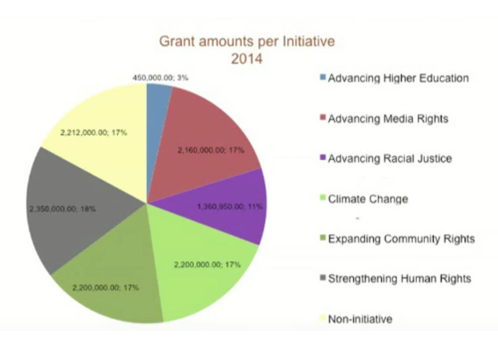
this is a story….and stories make us pay attention…...another reason we tell stories...is for memory….and to get people to remember what your talking about….
focus attention
We spent $2.2M on non-initiatives
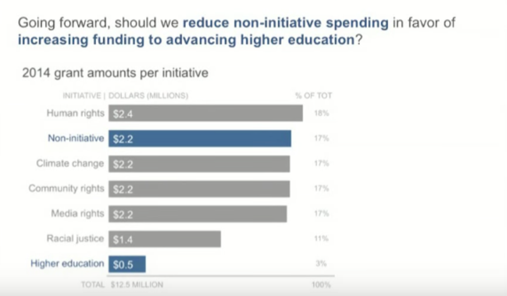
This is a little like….count the threes…..have to read it all…...and decipher what’s going on….but if I’m the one communicating this data….i should have already done that for you….
focus attention
Ticket Trends
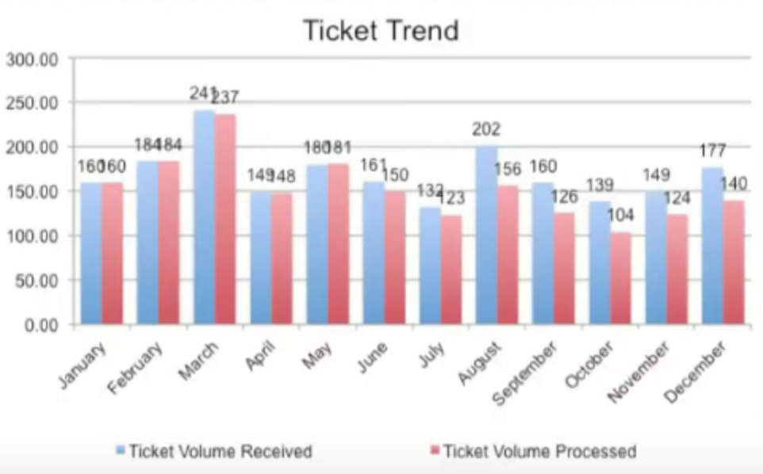
From an IT group….People couldn’t believe that people weren’t acting on this information….back story, is that the team was understaffed….it gets lost in the graph…..there’s no story to bring it to life…….they wanted more people...hired.
No story and little narrative to tie everything together…..
The four storylines
Lets focus on the last one….drama…..
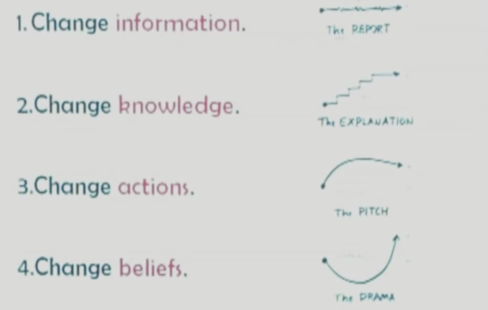
IF we know the change we want our audience to experience through our visualization, then we know whic storyline to choose.
Joseph Campbell
The patron saint of pesenters...
The heros journey
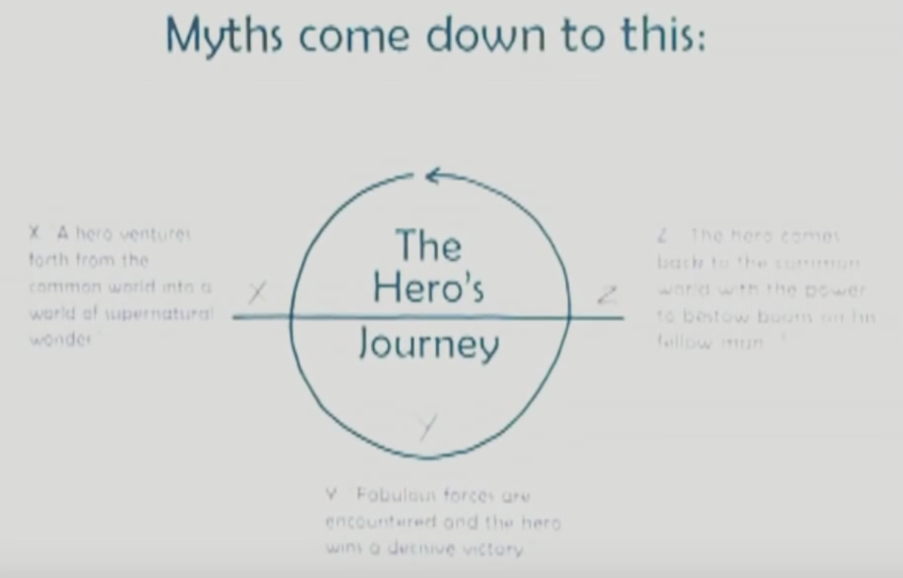
And one of the pieces that was in this book, is something that became know as "the hero's journey"
three most popular stories
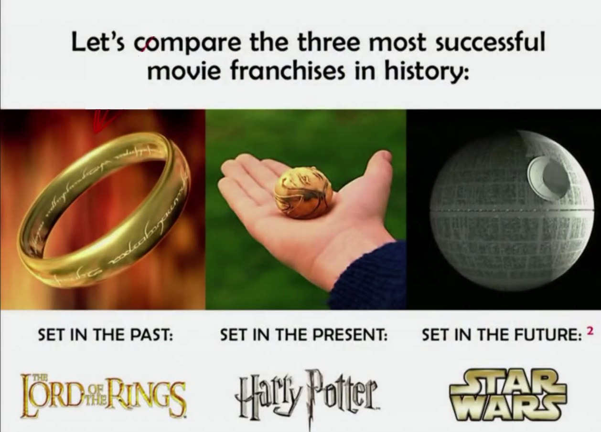
So lets look at these three stories....and see if they all tell....something that looks like the same story, and some kinda story that might adhere to this "hero's journey"
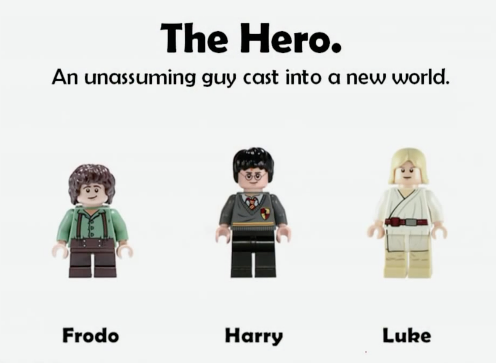
So all of these stories involve a hero....who's always this unassuming guy....who's cast into this new world against his own desire.
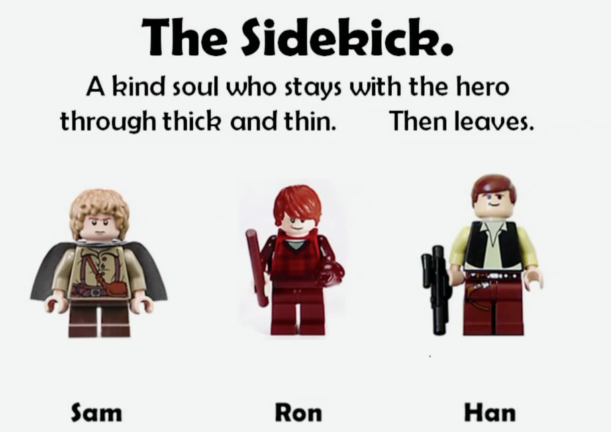
the sidekick...the goofy character..
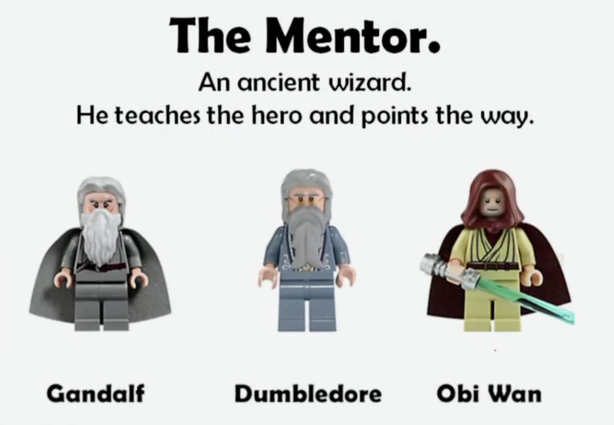
The hero is in a strange world...where they don’t know what’s going on….the job of the mentor….is to guide them….and then die….and come back in spirit form..right before the climax...and gives them the last piece of support that they needed.
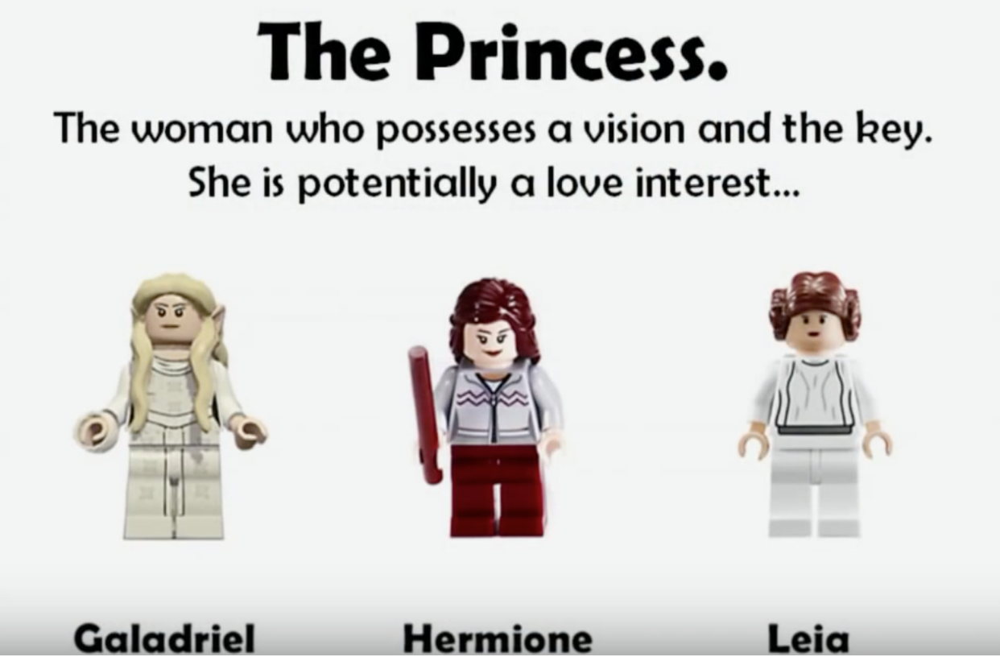
There always princesses…...always a potential love interest…..and always turns out to be the sister.
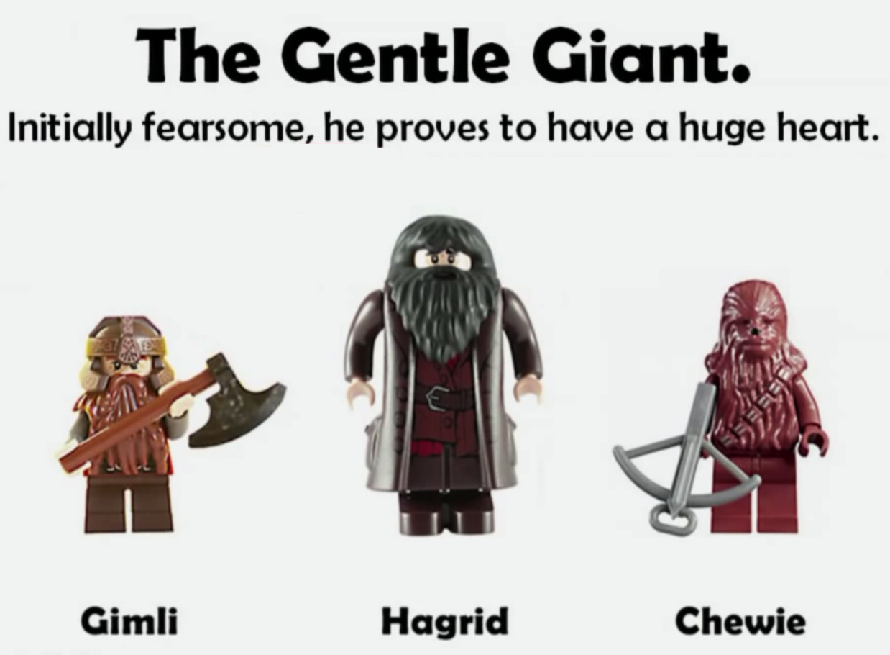
There’s always a gentle giant….
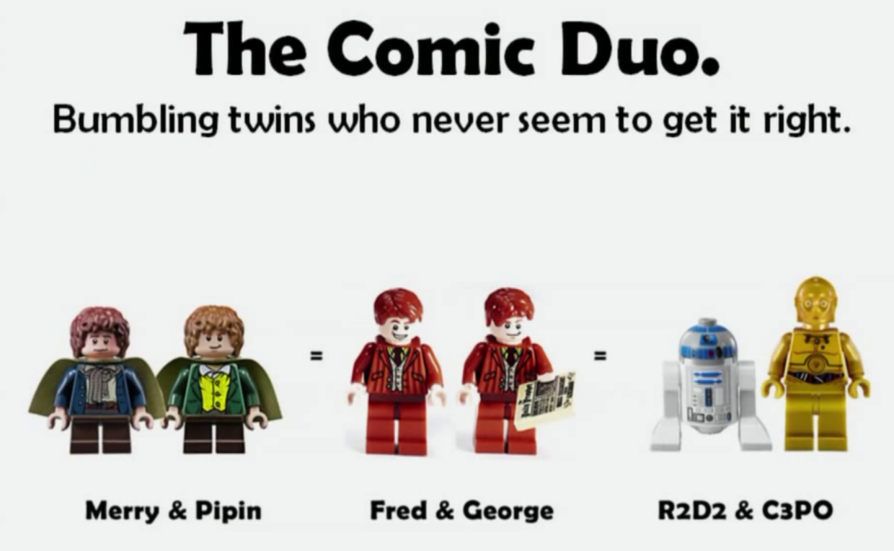
And there always twins…...comic relief…..they always find some aspect….in themselve that the hero also experiences….they also go on a semi journey
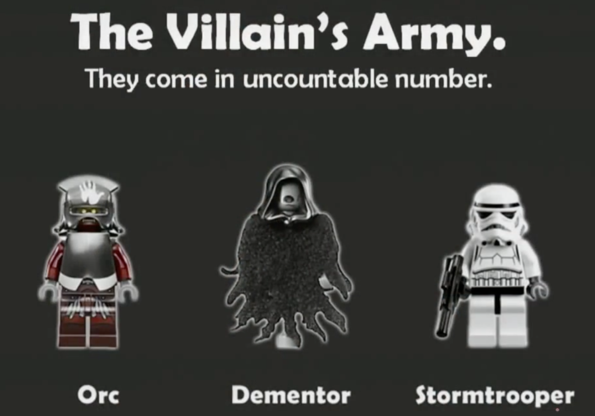
The army is always there in countless numbers…
This happens us all the time at work
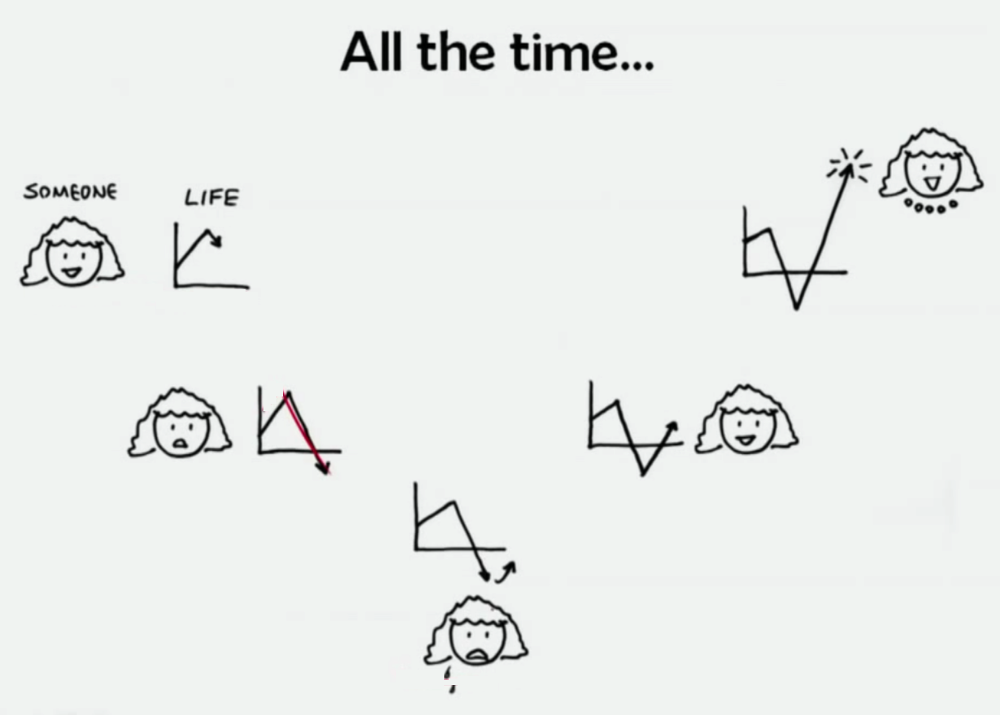
Need to deliver report / fact in this form of a story…...your mentor…..will give you what you want.
....
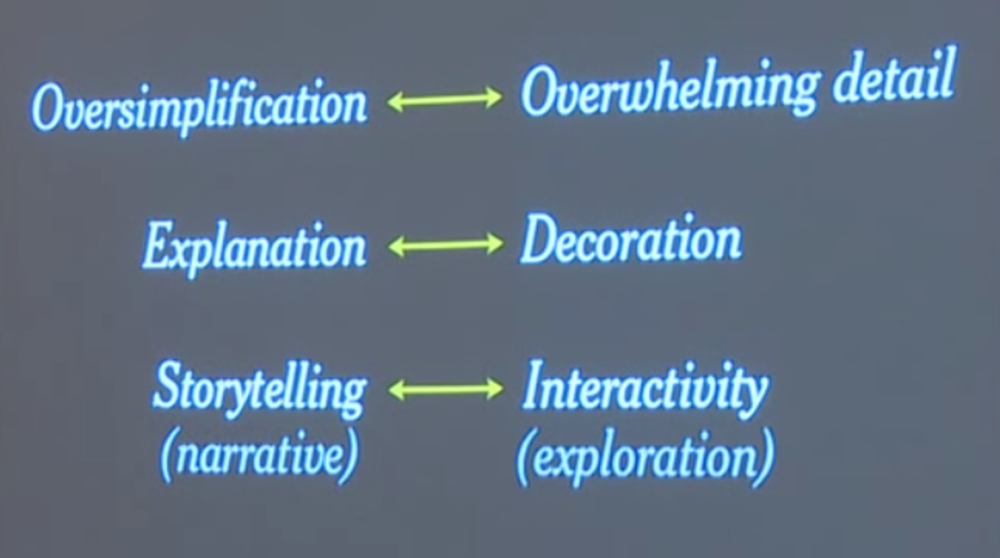
What we should show in a graphic ….at least or highlight….is the counter intuitive, the unexpected...the surprising, the informative….
focus attention
Where are your eyes drawn?
And now?......what do you notice?